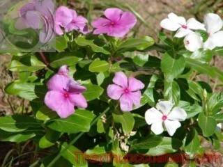

Tên khác
Tên thường dùng: Dừa cạn còn gọi là trường xuân, hoa hải đằng, bông dừa, dương giác, pervenche de Madagascar.
Tên khoa học Catharanthus roseus (L.) G. Don; Vinca rosea L; Lochnera rosea Reich.
Họ khoa học: Thuộc họ Trúc đào Apocynaceae.
Cây dừa cạn
(Mô tả, hình ảnh cây dừa cạn, phân bố, thu hái, thành phần hóa học, tác dụng dược lý,...)

Mô tả cây:
Dừa cạn là cây thuốc nam quý. Cây nhỏ cao 0,4-0,8m, có bộ rễ rất phát triển, thân gỗ ở phía gốc, mềm ở phần trên. Mọc thành bụi dày, có cành đứng. Lá mọc đối, thuôn dài, đầu lá hơi nhọn, phía cuống hẹp nhọn, dài 3-8cm, rộng 1-2,5cm. Hoa trắng hoặc hồng, mùi thơm, mọc riêng lẻ ở các kẽ lá phía trên, quả gồm 2 đại, dài 2-4cm, rộng 2-3mm, mọc thẳng đứng, hơi ngả sang hai bên, trên vỏ có vạch dọc, đầu quả hơi tù, trong quả chứa 12-20 hạt nhỏ màu nâu nhạt, hình trứng, trên mặt hạt có các hột nổi thành đường chạy dọc. Mùa hoa quả gần như quanh năm.
Phân bố, thu hái và chế biến:
Mọc hoang dại và được trồng ở nhiều nước nhiệt đới như Việt Nam, Ấn Ðộ, Indonesia, Philippine, châu Phi, châu Úc, Braxin... Tại châu Âu và châu Mỹ ở những vùng nóng cũng trồng quanh năm, nhưng ở những vùng lạnh cây được trồng theo mùa vì không chịu được lạnh.
Dừa cạn được xem là đặc sản của vùng đất Madagascar với giá trị dược tính cao nhất thế giới. Hiện nay hàng năm người dân Madagascar xuất khẩu đến ngàn tấn dừa cạn phơi khô ra nước ngoài để làm dược liệu. Ở Việt Nam gặp nhiều nhất tại các tỉnh gần biển, nhưng khắp nơi đều trồng được, trước đây chỉ được trồng làm cảnh, gần đây đã được trồng để thu hoạch lấy cây, lá và rễ chế thuốc. Tại Việt Nam, cây được trồng làm cảnh, hoặc làm thuốc trị cao huyết áp, tiểu đường, sốt rét, bệnh máu trắng, thông tiểu.
Công ty Dược liệu Trung ương Việt Nam II cũng đã xuất khẩu cây này từ thập niên 1990.
Thị trường dược phẩm Mỹ, Pháp, Nhật, Việt Nam… có nhiều loại thuốc được bào chế từ dừa cạn như thuốc trị cao huyết áp, ung thư (máu, tinh hoàn, dạ con)…
Hoạt chất trong dừa cạn phụ thuộc vào nơi trồng và thu hái. Giống trồng ở Việt Nam được đánh giá là thảo được tốt tương đương dừa cạn ở Madagascar, chứa khoảng 0,1-0,2% alkaloid toàn phần. Tỷ lệ alkaloid trong rễ (0,7-2,4%) cao hơn trong thân (0,46%) và lá (0,37-1,15%). Các nước Hàn Quốc, Nhật Bản, Trung Quốc… cũng đang ra sức bào chế thuốc từ loại cây này
Bộ phận dùng làm thuốc:
Dùng toàn cây: lá, rễ, cây
Bào chế:
Cây sau khi được thu hái, rửa sạch, phơi hoặc sấy khô
Bảo quản:
Bảo quản nơi khô ráo, tránh ẩm mốc
Thành phần hóa học
Hoạt chất của Dừa cạn là alkaloid có nhân indol trong tất cả các bộ phận của cây, nhiều nhất trong lá và rễ. Dừa cạn Việt Nam có tỷ lệ alkaloid toàn phần là 0,1-0,2%. Rễ chứa hoạt chất (0,7-2,4%) nhiều hơn trong thân (0,46%) và lá (0,37-1,15%). Các chất chủ yếu là: vinblastin, vincristin tetrahydroalstonin, prinin, vindolin, catharanthin, vindolinin, ajmalicin, vincosid (1 glucoalkaloid tiền thân để sinh tổng hợp các alkaloid). Từ Dừa cạn, người ta còn chiết được các chất sau: acid pyrocatechic, sắc tố flavonoid (glucozid của quercetol và campferol) và anthocyanic từ thân và lá dừa cạn hoa đỏ. Ngoài ra từ lá chiết được acid ursoloc, từ rễ chiết được cholin.
Tác dụng dược lý
Từ năm 1952 y học đã phát hiện ra dược tính của dừa cạn. Xuất phát từ việc bác sĩ Clark Noble ở Canada đã nhận được một gói chuyển phát nhanh loại cây này do một người dân gửi tới với lời giới thiệu “dân địa phương đã dùng chúng trị bệnh tiểu đường” nên ông đã đưa vào phân tích. Kết quả khá bất ngờ, thay vì tác dụng hạ đường huyết trong máu, ông lại phát hiện ra hoạt tính trị bệnh ung thư bạch cầu của loại cây này. Dừa cạn đã được đưa vào bệnh viện thử nghiệm và trở thành cây dược liệu chính thức theo y khoa hiện đại.
Thành phần vincristin có tác dụng với bệnh nhân ung nhưng chúng lại là thành phần gây hại cho thai nhi, ức chế hệ thần kinh.
Kết quả phân tích của bác sĩ Clark, chiết xuất dừa cạn giàu
alkaloid (gồm các loại: vinblastin, vincristin,
tetrahydroalstonin, pirinin, vindolin, catharanthin, vindolinin,
ajmalicin….).
Trong đó thành phần vincristin, vinblastin khi tách chiết thành
dạng thuốc tiêm sẽ có tác dụng lớn trong ức chế tế bào hoặc sự
phân bào. Cho nên chúng hạn chế được việc hình thành bạch cầu
thừa ở bệnh nhân ung thư máu. Đặc biệt đến nay, y khoa vẫn chưa
tìm ra phương pháp gì điều trị bệnh bạch cầu tốt hơn nên chiết
xuất dừa cạn càng trở nên quý với bệnh nhân ung thư máu.
Thân và lá dừa cạn có tính chất làm săn da, lọc máu.
Tác dụng tẩy giun khá mạnh, tác dụng lợi tiểu của catharanthin, vindolinin và vindolidin, nhưng ajmalicin lại có tác dụng ngược lại. Những thí nghiệm dùng trên người bệnh được bắt đầu vào những năm 1960 ở Mỹ, Pháp và một số nước khác. Tuy nhiên còn rất nhiều ý kiến khác nhau. Mặc dù vậy, vì hiện nay chưa có loại thuốc nào khác tốt hơn, nên nhu cầu về dừa cạn vẫn cứ tăng lên. Cũng vì mục đích dùng chữa các khối u nên khi mua dừa cạn, người ta đặc biệt chú ý tới hàm lượng ancaloit toàn phần, và trong số ancaloit toàn phần ấy có bao nhiêu hàm lượng vincaleu-coblastin.
Vị thuốc dừa cạn
(Công dụng, liều dùng, tính vị, quy kinh...)
Tính vị, tác dụng:
Dừa cạn có tính có tính mát, vị đắng, tác dụng hoạt huyết, tiêu thũng, trị viêm, hạ huyết áp.
Công dụng của dừa cạn :
Phòng và hỗ trợ điều trị bệnh Ung thư, u bướu
Hỗ trỗ điều trị bệnh tiểu đường, đường huyết cao
Rất tốt cho người mắc huyết áp cao
An thần, điều trị bệnh mất ngủ
Tác dụng tốt đối với bệnh nhân bị bệnh bạch cầu (Bệnh máu trắng)
Cách dùng, liều dùng
Liều dùng thân và lá phơi khô 8 - 20g (dạng thuốc sắc, cao lỏng hay viên nén từ cao khô). Nước ta đã chiết được vinblastin từ lá dừa cạn và dùng dưới dạng thuốc tiêm để chữa bệnh bạch cầu lymphô cấp.
Ứng dụng lâm sàng của vị thuốc dừa cạn
Dùng cho bệnh nhân ung thư :
Dừa cạn 15g, cây xạ đen 30g. Các vị thuốc đen rửa sạch, sắc với 1 lít nước, sắc cạn còn 700ml chia 3 lần uống sau bữa ăn 30 phút.
Trị bệnh bạch cầu lymphô cấp:
Dùng 15g dừa cạn sắc nước uống. Ta đã chiết được vinblastin từ lá Dừa cạn và dưới dạng thuốc tiêm vinblastin sulfat để chữa bệnh này. 2. Trị huyết áp cao: Dùng Dừa cạn 12g, Hy thiêm 9g, Thảo quyết minh 6g và Bạch cúc 6g, sắc uống.
Hỗ trợ điều trị tăng huyết áp:
Dừa cạn 160g, lá đinh lăng 180g, hoa hòe 150g, cỏ xước 160g, đỗ trọng 120g, chi tử 100g, cam thảo đất 140g. Các vị sao giòn, tán vụn trộn đều (bảo quản trong hộp kín tránh ẩm). Ngày dùng 40g. Hãm với 1 lít nước sôi, sau 10 phút có thể dùng được. Dùng uống thay nước trong ngày.
Trị bỏng nhẹ:
Dùng lá giã nát đắp lên những vết bỏng (chú ý: chỉ đắp trong trường hợp không chợt da, bỏng nhẹ) có tác dụng làm mát chỗ bỏng, giảm đau, chống bội nhiễm. Đắp 2 – 3 ngày.
Trị bế kinh (đau bụng, mặt đỏ, bụng dưới căng đầy, tính tình cáu gắt):
Dừa cạn (phơi khô) 16g, nga truật 12g, hồng hoa 10g, tô mộc 20g, chỉ xác 8g, trạch lan 16g, huyết đằng 16g, hương phụ 12g. Sắc với 500ml nước, còn 300ml chia 2 lần uống trong ngày.
Trị Lỵ trực khuẩn:
Dừa cạn (sao vàng hạ thổ) 20g, cỏ sữa 20g, cỏ mực 20g, chi tử 10g, lá khổ sâm 20g, hoàng liên 10g, rau má 20g, đinh lăng 20g. Sắc với 600ml nước còn 300ml chia 3 lần uống trong ngày. Uống 5 ngày.
Chứng tiêu khát (khát nhiều, uống nhiều, tiểu nhiều):
Dừa cạn 16g, cát căn 20g, thạch hộc 12g, hoài sơn 16g, sơn thù 12g, đan bì 10g, khiếm thực 12g, khởi tử 12g, ngũ vị 10g. Sắc với 600ml nước, còn 300ml, chia 2 lần uống trong ngày. Uống 7 ngày.
Dừa cạn 10g, cây dây thìa canh 20g, nước 1 lít. Các vị thuốc đem rửa sạch, sắc cạn nước còn 3 bát chia 3 lần uống trong ngày (Uống sau bữa ăn 15-20 phút).
Trị mất ngủ:
Lấy 20g thân lá dừa cạn khô sao vàng, 12g lá vông nem, 12g hạt muồng sao đen, sắc uống trước khi đi ngủ.
Trị rong kinh:
Lấy từ 20 – 30g dừa cạn sao vàng (toàn cây có cả hoa và rễ), sắc lấy nước, uống liên tục từ 3 – 5 ngày.
Tham khảo
Kiêng kị:
Thuốc có thể gây độc cho thai, nên tránh dùng cho thai phụ và người đang nuôi con bằng sữa mẹ.
Người huyết áp thấp không nên dùng
Sử dụng liều cao và kéo dài có thể gây mù, tử vong
Lưu ý khi dùng
Tương tự các loại thuốc kháng ung thư khác, các chế phẩm alkaloid của dừa cạn cũng gây một số phản ứng bất lợi như: buồn nôn, nôn, nhức đầu, tiêu chảy, táo bón, tắc ruột, liệt, chán ăn, viêm miệng, rụng tóc, giảm bạch cầu, viêm thần kinh..
- Khi dùng dừa cạn làm thuốc nên chọn loại hoa trắng vì hoạt chất của chúng cao hơn cây hoa đỏ, hồng.
- Bạn có thể lấy toàn thân cây phơi khô, nấu nước hoặc hãm thành trà để trị cao huyết áp. Tuy nhiên không nên dùng quá 50g mỗi ngày.
Mặc dù trong dừa cạn có hoạt chất chống ung thư, tuy nhiên không phải cứ dùng trà dừa cạn thì chữa được ung thư, bởi một liều tiêm vincristin, vinblastin có hàm lượng rất cao, việc dùng các thành phần này cũng dễ bị ngộ độc nên cần có sự hướng dẫn của bác sỹ điều trị.
 Sau 2 tháng uống thuốc,bệnh rối loạn tiền đình của tôi đã khỏi
hẳn
Sau 2 tháng uống thuốc,bệnh rối loạn tiền đình của tôi đã khỏi
hẳn
Nơi mua bán vị thuốc DỪA CẠN đạt chất lượng ở đâu?
Trước thực trạng thuốc đông dược kém chất lượng, nguồn gốc không rõ ràng,... xuất hiện tràn lan trên thị trường, làm ảnh hưởng tới hiệu quả điều trị cũng như ảnh hưởng tới sức khỏe của bệnh nhân. Việc lựa chọn những địa chỉ uy tín để mua thuốc đông dược là rất quan trọng và cần thiết. Vậy khách hàng có thể mua vị thuốc DỪA CẠN ở đâu?
DỪA CẠN là vị thuốc nam quý, được sử dụng rộng rãi trong YHCT. Hiện tại hầu hết các cửa hàng thuốc đông dược, phòng khám đông y, phòng chẩn trị YHCT... đều có bán vị thuốc này. Tuy nhiên người mua nên chọn những địa chỉ có uy tín, đảm bảo chất lượng, có giấy phép hoạt động để mua được vị thuốc đạt chất lượng.
Với mong muốn bệnh nhân được sử dụng những loại dược liệu đúng, chất lượng tốt, phòng khám Đông y Nguyễn Hữu Toàn không chỉ là đia chỉ khám chữa bệnh tin cậy, uy tín chất lượng mà còn cung cấp cho khách hàng những vị thuốc đông y (thuốc nam, thuốc bắc) đúng, chuẩn, đạt chuẩn chất lượng. Các vị thuốc có trong tiêu chuẩn Dược điển Việt Nam đều được nghành y tế kiểm nghiệm đạt chất lượng tiêu chuẩn.
Vị thuốc DỪA CẠN được bán tại Phòng khám là thuốc đã được bào chế theo Tiêu chuẩn NHT.
Giá bán vị thuốc DỪA CẠN tại Phòng khám Đông y Nguyễn Hữu Toàn: Gọi 18006834 để biết chi tiết
Tùy theo thời điểm giá bán có thể thay đổi.
+ Khách hàng có thể mua trực tiếp tại địa chỉ phòng khám: Cơ sở 1: Số 481 lô 22 Lê Hồng Phong, Phường Gia Viên, Thành phố Hải Phòng
+ Mua trực tuyến: Thuốc được chuyển qua đường bưu điện. Khi nhận được thuốc khách hàng thanh toán tiền COD.
Tag: cay dua can , vi thuoc dua can , cong dung dua can , Hinh anh cay dua can , Tac dung dua can , Thuoc nam
Thaythuoccuaban.com Tổng hợp
*************************